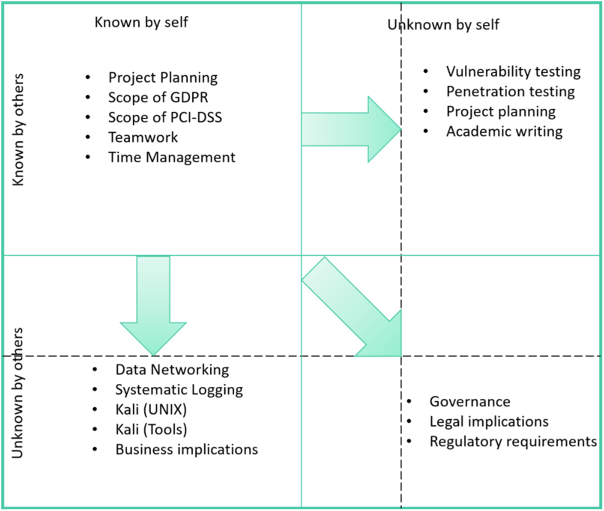

About Me
- I am Technical professional with hands-on experience in Telecommunications and Data Networking Industry. My Job profile requires me to play vivid roles ranging from solution designing, integration, testing and security auditing for ISP clearances.
I am strong believer in the notion of "learning by doing". I love to read journals and attend cross domain meet-ups to broaden my thought process. I am an audiophile with an innate urge to sense the intricate details without loosing the track.
Feel free to connect, for some chit-chats over a cup of coffee.
Technical Experience
Technical Delivery Lead, United Kingdom
Projects:
- Orange, France (Capacity expansion and migration from legacy ATCA TAS to NFV TAS)
- SoftBank, Japan (Infrastructure Integration lead for Mavenir IMS Applications)
- T-Mobile, US (Infrastructure deployment and automation Architect)
- Rakuten, Japan (NFV Integration Lead for Mavenir IMS Applications with ETSI-MANO)
- Play, Poland (Infrastructure Architect and Integration lead for RHOSP and Big Cloud Fabric (SDN))
- Co-ordinating a team of senior engineers across countries to meet deadlines.
- Acting as a technical point of contact for Telco operators to prioritise deliveries & go-live milestones.
- Enacting meticulous processes and checklists to save time during interconnecting with CSPs.
- Heading technical meetings with CoSPs R&D to device solutions while adhering to the Telco standards.
- Delivered proof of concepts to CoSPs for demonstrating NFV architecture and its interoperability.
- Identified areas to introduce automation frameworks and improved deployment timelines by ~ 35%.
- Designing of network accelerated infrastructures for better throughput using technologies OVS-DPDK and SR-IOV.
- Integration of Mavenir Applications with customer provided 3rd party NFVi and VNFM providers like CISCO.
- Designing of end-to-end test cases to test application and infrastructure resiliency.
Solution Integrator, India
Projects:
- Telcel, Mexico (Designed low-level design and network layout for interconnection with CSP)
- Telefonica, Argentina (Successfully Led Application Integration activities for CSCF)
- Everything Everywhere, United Kingdom (Tested MTAS Application and rolled out in production)
- Telefonica, United Kingdom (End-to-End Testing and production roll out planning)
- Etisalat, Egypt (Designed and deployed BroadSoft business telephony application server)
- Designed high-level and low-level design documents for greenfield deployments.
- Proposed roll-out solutions for migrating from legacy to cloud-ready solutions for LIVE networks.
- Troubleshoot issues with the help of network traces and application logs while interoperability testing.
- Designed test cases for Internal testing and customer acceptance sign off.
Soft Skills
Launching into Cyber Security
Collaborative Learning Discussion 1 - Summary Post:
The day-to-day relevance of the topic encouraged the discussion to cover a broad spectrum of variables. Our discussion ascended 5 key reasons emphasizing the cardinal need to address Cyber Security as matter of urgency and invest in Cyber Security globally.
1. The exponential increase in endpoints with the advent of IoT over 5G. 5G brings a range of benefits with its ability to support a massive number of static and mobile IoT devices, which have a diverse range of speed (Internet of things in the 5G era Opportunities and Benefits for Enterprises and Consumers, 2019).5G with the internet of things (IoT) will undeniably introduce the alarming number of devices online and thus making the networks via these end devices even more vulnerable for Cyberattack (Miller,2021).
2. Endless avenues to apply IoT and their sensitivities. The focus is now shifting towards remote or industrial control context-aware autonomous solutions using the technologies like Machine-to-machine, or M2M and Internet of things, or IoT (Chawla, 2021). Freya aptly draws our attention towards the role IoT can play in the medical discipline with a real-life example of spinal surgeries performed on twelve patients over China Telecom’s 5G network. Effectively pointing out at the sensitivity of the things at stake if network hosting these devices and services are compromised (Basey,2021).
3. Implementational challenges. I concur with Arun on the unspoken issues of integration and interworking with legacy protocols (Arunanthy,2021). These legacy protocols are not encrypted and carry all the information in plain text. These sophisticated algorithms running over M2M and AI need constant interfacing with the device endpoints and need to be updated over the air, or OTA. The legacy telecommunications standards do not cover secure implementation of these protocols and associated upgrades procedures (Chawla, 2021).
4. Regulatory Compliance and decentralization of collected data. Rachel emphasizes the need for regulatory compliancy of the Tech Giants to ensure multiple layers of protection against cyber-attacks to protect the collected personal and sensitive data from the consumer endpoint devices. (Murerwa,2021)
5. Stricter vendor selection criterias. Kin highlights that this expected surge in data and bandwidth over distributed network, demands even more hardware and stricter vendor selection criteria (Wong,2021). This argument urges the us to learn from past experiences with Chinese vendors and impels us to revaluate our vendor selection strategy.
References: Arunanthy, N. (2021) Initial Post. Available from: Available at: https://www.my-course.co.uk/mod/hsuforum/discuss.php?d=240321 [Accessed 13 Feb. 2021]. Basey, F. (2021) Initial Post. Available from: Available at: https://www.my-course.co.uk/mod/hsuforum/discuss.php?d=240321 [Accessed 13 Feb. 2021]. Chawla, V. (2021) Initial Post. Available from: Available at: https://www.my-course.co.uk/mod/hsuforum/discuss.php?d=240321 [Accessed 13 Feb. 2021]. Internet of things in the 5G era Opportunities and Benefits for Enterprises and Consumers. (2019). Available from: https://www.gsma.com/iot/wp-content/uploads/2019/11/201911-GSMA-IoT-Report-IoT-in-the-5G-Era.pdf. [Accessed 13 Feb. 2021]. Miller, S. (2021) Initial Post. Available from: Available at: https://www.my-course.co.uk/mod/hsuforum/discuss.php?d=240321 [Accessed 13 Feb. 2021]. Murerwa, N. (2021) Initial Post. Available from: Available at: https://www.my-course.co.uk/mod/hsuforum/discuss.php?d=240321 [Accessed 13 Feb. 2021]. Wong, K. (2021) Initial Post. Available from: Available at: https://www.my-course.co.uk/mod/hsuforum/discuss.php?d=240321 [Accessed 13 Feb. 2021].
Collaborative Learning Discussion 2 - Summary Post:
This specific collaborative learning discussion has not only pushed all the participants to go beyond the generic comprehension of cybersecurity but also urged all to reflect on the technologies at various levels using real-life examples. The initial posts highlighted two of the most widely accepted technologies Virtual Desktop Infrastructure and Stateful Fuzzing Frameworks. Having said that the width of information from this exercise requires us to categorize the security technologies into 3 wide realms of approaches.
1. Physical and human factor driven approaches:
This category covers the technologies that have direct interaction with humans along with the social engineering aspects. It presses the importance of rightful access solely for the intended personnel on the very physical level. (e.g., accessing a data centre) using technologies like biometric scanners, RFIDs, as rightly pointed out in the forum by Kin. (Wong et al., 2021).
2. System and Network driven approaches:
The system-level factor covers the hardware-based security technologies like Trusted Platform Module (TPM) enable the IT administrators to ensure the confidentiality of the commissioned systems throughout their life cycle (Luvaha et al., 2021). It also considers the security of the networks to which these systems might connect. The networks are designed based on the traffic models which help to choose the best type of firewall depending on the applications running at the endpoints. Simon concurred by acknowledging that the above complications can be somewhat bypassed by implementing VDI (Miller et al.,2021).
3. Solution design driven approaches:
This type of factors encompasses the integration of technological solutions like the use of zero trust tokens-based authentication, multifactor authentication. Use of secure protocols like TLS while integrating with third-party solutions like DNS, etc (Khan U et al.,2021). Employing Stateful fuzzing frameworks to test the boundary conditions of these secure protocols (Miller et al.,2021). Designing a solution with an open scope to be able to provision and integrate with upcoming technologies like artificial intelligent firewall (Diez R. et al.,2021).
References: Miller S., Chawla V, Stanley C., Luvaha D., Danso S., Isic D., Tselapedi S. and Mengesha Y. (2021) Collaborative Learning Discussion 2, Initial Post by Vaibhav Chawla. Available from: https://www.my-course.co.uk/mod/hsuforum/discuss.php?d=245319 [Accessed 22 March 2021] Diez R., Wong K., Anagnostopoulos S., Giorgi D., Alkam A., Rashid A., Khan U. and Mengesha Y. (2021) Collaborative Learning Discussion 2, Initial Post by Raquel Martinez Diez. Available from: https://www.my-course.co.uk/mod/hsuforum/discuss.php?d=245582 [Accessed 22 March 2021] Khan U, Miller S., Luvaha D., Giorgi D., Chawla V, Alkam A., Basey F. and Wong K. (2021) Collaborative Learning Discussion 2, Initial Post by Umar Khan Available from: https://www.my-course.co.uk/mod/hsuforum/discuss.php?d=245400 [Accessed 22 March 2021] Luvaha D., Arunanthy N., Chawla V., Nova S., Tolis P., and Mengesha Y. (2021) Collaborative Learning Discussion 2, Initial Post by David Luvaha. (2021) Available from: https://www.my-course.co.uk/mod/hsuforum/discuss.php?d=245582 [Accessed 22 March 2021] Wong K., Luvaha D., Rashid A., Tselapedi S., Alkam A., Khan U. and Mengesha Y. (2021) Collaborative Learning Discussion 2, Initial Post by Dinko Isic. Available from: https://www.my-course.co.uk/mod/hsuforum/discuss.php?d=244959 [Accessed 22 March 2021]
The four-stage reflective model
| Stage | Description |
| Context | To Collaboratively reflect on the idea "Why Cyber Security is now a global issue and why it is important to invest in Cyber Security?" |
| Description | The avenue chosen was "Telecommunications" as its my sector of experience. 5G and IoT were the topic of the main discussion. |
| Analysis | 5G brings a range of benefits with its ability to support a massive number IoT devices. The scope of IoT widely ranges from industrial to medical application. Thus, helping us realise the sensitivity of data being processed in real-life. Reflecting on the idea of interworking with legacy architecture and their protocols urges us to revisit and improve the deployment and everyday operational standards. The algorithms enabling this technologies require real-life datasets to be trained and improved. Hence, the collection data from the endpoint devices and secure storage scope needs to be well articulated in the regulations to refrain the tech giants to gain any sort of autonomy. The increase endpoints and traffic demands more infrastructure. Recent miscreance from the Chinese vendors, urges us to revisit our vendor selections procedure and conventions. |
| Evaluation | The discussion boiled down to 5 key reasons re-affirming the need to prioritise Cyber Security on global scale. 1. The exponential increase in endpoints with the advent of IoT over 5G. 2. Endless avenues to apply IoT and their sensitivity 3. Implementational challenges 4. Regulatory Compliance and decentralization of collected data. 5. Stricter vendor selection criterias. |
Network and Information Security Management
Relective Summary
Preface
The Network and Information Security Management coursework covers a great breadth of information to develop a cybersecurity professional's critical thought process. Our cohort was divided into groups, enabling us to collaborate and witness vivid perspectives. I was in Group 2. Group activities start with a case study, "Compromising a Medical Mannequin", to establish the importance of cybersecurity while drawing attention towards the sensitivity of the things at stake in the real world. The seminar gave all a chance to understand the operational layers and dynamics that come into play from designing to delivery of any product. Considerable interdependence with old established systems with no planned updates or maintenance follow-ups makes the medical industry one of the most fragile targets. This revelation fuelled our interest to understand and discuss the design choices and mitigation plans. The module gave us a broader perspective covering various aspects and helped us classify the scope into four main categories: technical, organisational, procedural, and legal. The subsequent units helped us develop a more in-depth understanding of each of the above categories.
Technical
Hosting the website gave us a first-hand experience with Amazon Web Services (AWS) platform and the various services offered. The services we worked with were EC2, Elastic Beanstalk, S3 and IAM (Identity and Access Management). The granularity of IAM helped in imagining the scale at which large scale organisations operate. Kali Linux is a free, well-regarded, and widely accepted Debian based vulnerability assessment and penetration testing distribution. It encloses more than 500 utilities, is used by all the experts in the cybersecurity industry. It proved to be an ideal sandbox to try our hands-on industry's sophisticated testing suites like Metasploit, Nikto and OpenVas. The reading lists and seminar gave us an overview of the TCP and OSI model, which helped us build a robust foundation for data networking concepts and ethical hacking. While performing reconnaissance, we used various tools and utilities to understand AWS network topology. The methodical approach helped us perform a thorough analysis of applications hosted on the website with Linux version, firmware version, kernel level, which helped us find the exploitable Common Vulnerabilities and Exposures (CVEs).
Organisational
The proposal writing helped us develop a critical thought process to plan, analyse, and contest the best methodologies for e-commerce websites. The exercise required us to draft a proposal that chooses one methodology over another with a strong supporting rationale. We developed a 360° understanding of the information flow through an organisation. Communicating the information like project plan in terms of time, lifecycle, and methodologies is vital. It gives the company/organisation firm ground to evaluate the scope and align their expectations. Writing the executive summary helped us realise the overlapping scope of different departments might have and the importance of communicating the relevant information to the right level more effectively. The summary gave us a glimpse of a real-world ecosystem where technical accuracy is one of the many variables of the equation. The hierarchical structure in an organisation bestows different responsibilities at different levels. Hence accuracy, relevance and clear expectations are essential components of any executive summary.
Legal
With the help of the case studies, we were able to put the learnings to the test. In the case study, I highlighted two essential boundary conditions that a system could encounter while enforcing General Data Protection Regulation (GDPR) across political boundaries. The case study helped understand boundary conditions included: - Maintaining two independent opt-out queues as part of the UK and the EU. The opt-out requests were being updated only in one of the two queues. - GDPR requires collective responsibility across overlapping business units to design and devise methodologies that see through the system's implementation while respecting the political boundaries. Payment Card Industry Data Security Standard (PCI-DSS) and its 12-point requirements enforce procedures to secure the transactions done via payment cards. It covers a wide array of potential security risks from physical to logical application-level security to avoid data theft and data breach. Both GPDR and PCI-DSS deal with data security and have considerable overlap. However, the characteristic differences are the use cases for which they were conceptualised. We could comfortably say that GDPR regulates to ensure individual control over personal data by including the detailed clauses. On the other hand, PCI ensures security and minimize data retention on the point of sales and online transactions to secure the card payment industry. The standards are not impediments rather guidelines to help us be ready for the rainy-day scenarios.
Procedural
The latter units of the module helped us develop an in-depth understanding of logging and digital forensics in cybersecurity. In case of any data breach or any planned attack, logging and forensics serve as a pillar to analyse the impact and make a firm case if/when taken to court. The need for a breach plan and (Plan, Do, Check, Act) PDCA checklists play a vital role in recovering the system and mitigating impact and hence are inculcated in respectable ISO standards.
Teamwork
Our Team, Group 2 was very supportive, and all the members believed in shared ownership. All the members proactively followed up on the WhatsApp group, where we convened for casual chats and updated each other on the progress. We met twice every week on Skype to discuss the reading lists, brainstorm on the tasks at hand and collaborate. We shuffled tasks with some basic knowledge transfer to ensure everyone gets a chance to contribute. We took some time to have informal sessions to share experiences and give each other day to day examples to improve understanding.
Evaluation of Final Project (Unit 11) vs. Design Proposal (Unit 6)
The encouraging feedback and constructive criticism received for the first assignment urged our group to realign ourselves to the fundamental approach of the module. We use the bottom-up approach to scan the website and we then switch to STRIDE to assess the vulnerabilities and suggest procedures to mitigate the impact of vulnerabilities. Our collective experience and the feedback helped resketch the assignment from a business continuity perspective.
Reflective model (Johari Window)
I aspire to use my experience to be a Telco Security Architect/Consultant. The coursework has given me the needed direction to ensure security for the end customers by exercising meticulous procedures to improve implementation in the very designing phase.
Artifacts
- Team Contract - 'Group 2'
- Collaborative Case Study 'Compromising a Medical Mannequin'
- Seminar Presentation - DREAD Analysis 'Compromising a Medical Mannequin'
- Seminar Presentation - TCP/IP vs OSI Model
- Collaborative Learning Discussion 2 - Vulnerability Scan Report
- Group's Detailed Vulnerability Scan Report
- Week 6 - Design Document
- Collaborative Learning Discussion 3 - GDPR Case Study
- Week 11 - Executive Summary